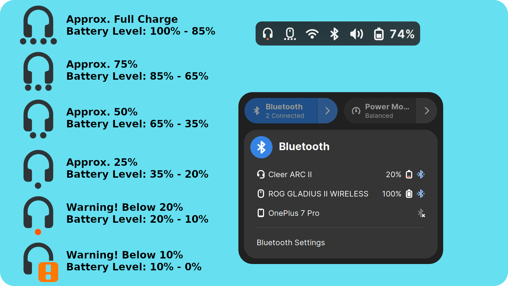
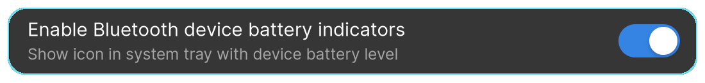
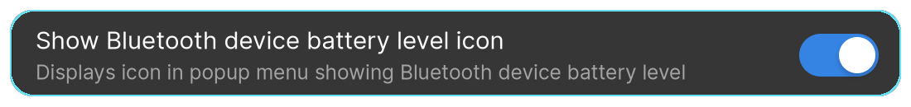
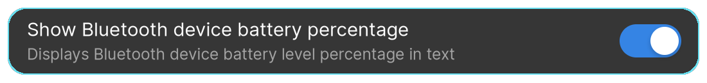
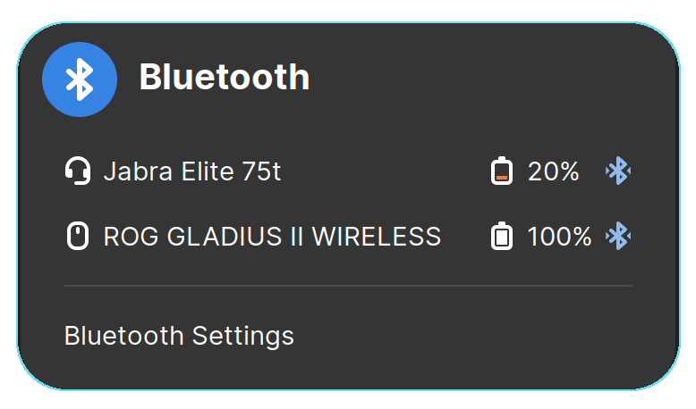

Bluetooth Battery Meter


Currently supported on Gnome Versions:
45
Bluetooth Battery Meter is a Gnome Extension featuring indicator icons in system tray, serving as meter for Bluetooth device battery levels and providing detailed battery levels via icon/text in the Bluetooth quick settings menu.

Important Notes
- Certain Bluetooth devices report battery levels in different increments.
- One would expect a continuous discharge reading like 100, 99, 98, 97… down to 0.
- However manufacturers often design devices to report in specific increments.
- Some devices may report battery levels in increments of 5 (e.g., 100, 95, 90, 85… to 0)
- Some devices may report battery levels in increments of 10 (e.g., 100, 90, 80, 70… to 0)
- Some devices may report battery levels in increments of 20 (e.g., 100, 80, 60, 40… to 0)
- For Quick settings percentage displayed in text (when enabled), might observe battery level stuck at a percentage example 100% for a while and later suddenly drop down to 80%, if designed for increment of 20%.
- Certain Bluetooth devices may not report battery level, and may work only when bluez experimental features are enabled.
- Most Linux distributions ship with bluez experimental features are disabled, but there are some like Fedora 39 ship with it enabled.
- If your bluetooth device doesn’t show battery level, refer the procedure below to enable bluez experimental feature
Enable Experimental Bluez
If bluetooth device is not reporting battery level, it could be that it needs Bluez Experimental.
Check if experimental feature
To check if experimental feature is enabled or not by try the following command. It will echo if experimental flag is enabled or disabled.
bluetoothctl show | grep -q 'PowerState' && echo 'Experimental flag enabled' || echo 'Experimental flag disabled'
Check if experimental feature
There are several ways to enable experimental feature, the easiest way to enable is to edit system file
/etc/bluetooth/main.conf
Under [General] section add the following line or if the line exist change it from false to true
Experimental = true
Restart the bluetooth service using
systemctl restart bluetooth
Once done check if device displays battery level under Power in Gnome Control Center (Settings)

Features
Battery Level vs Icon
| Icon Meter Level | Battery Level |
|---|---|
 | Approx. Fully Charge Battery level: 100 - 85% |
 | Approx. 75% Battery level: 85-65% |
 | Approx. 50% Battery level: 65-35% |
| Approx. 25% Battery level: 35-20% | |
 | Warning! Below 20% Battery level: 20-10% |
 | Warning! Below 10% Battery level: 10-0% |
Supported Device Type and Icon
| Icons Types | Reported by BT Client |
|---|---|
 | input-mouse |
 | input-keyboard |
| input-gaming | |
| input-tablet | |
 | audio-headphone |
| audio-headset |
 | audio-speakers |
System Tray Indicators
This extension provide information by displaying battery Levels of Bluetooth device as a Meter. This help taking minimum space on the system panel without being very intrusive.
These indicator icon can also be disabled in Extension Preferences
Extension Preferences

System Tray Indicators

Display Battery Level Icon In Bluetooth Quick Settings Menu
An option to add/remove Battery Level icon in Bluetooth quick settings menu.
Extension Preferences

Bluetooth Quick Settings

Display Battery Percentage In Text In Bluetooth Quick Settings Menu
An option to add/remove Battery Percentage in text in Bluetooth quick settings menu.
Extension Preferences

Bluetooth Quick Settings

Swap Battery Percentage Text With Icon In Bluetooth Quick Settings Menu
When both, Battery Percentage Text and Battery Level Icon are enabled, Setting this feature to enabled with display Text after Icon, and vice versa
Extension Preferences

Bluetooth Quick Settings Icon Before Text Disabled

Bluetooth Quick Settings Icon Before Text Enabled
